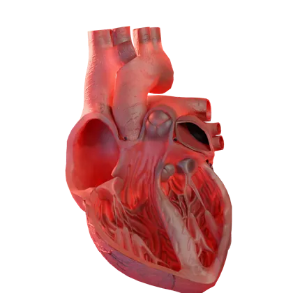
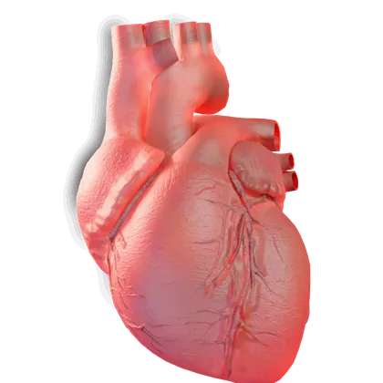
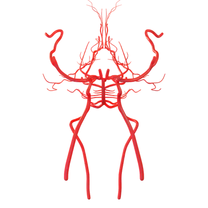
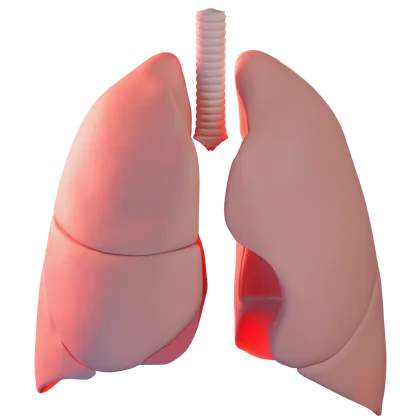
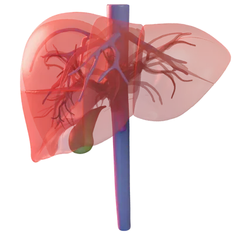
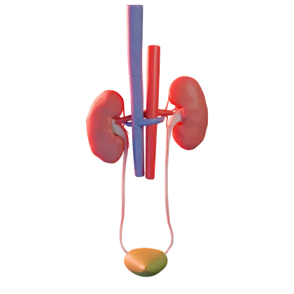

Medical science in 3D
See what really happens inside your body.
Scroll down and travel through it: the brain, the heart, the liver, the lungs, and what goes wrong with each one in India.
The brain
Stroke arrives a decade early here
The heart
A heart attack is a plumbing problem
Not a weak heart: a blocked artery. What opens it again is medicine, a balloon, and sometimes a stent, and every minute of delay costs muscle.
The liver
You can be slim and still have a fatty liver
The lungs
Lung disease isn't only a smoker's story
Scarring, dust, infection and inherited disease can take the same lungs apart, sometimes before a person ever lights a cigarette.
The atlas
Turn the body over in your handsBeta
Seven models to spin and zoom, 45 labelled structures. Open the atlas ↗

Heartcut open · 5
Heart's arteries6 structures Brain6 structures
Brain's arteries7 structures
Lungs6 structures
Liver7 structures
Kidneys8 structuresEvery label sits on a real structure. For five of the six scenes each one is a separate named mesh in an open anatomy library, and its pin is that mesh's own position, projected through the same camera that rendered the picture — not a dot placed by eye. The cut-open heart is a licensed model with no named parts, so its labels were placed by hand from features that cannot be mistaken and checked at every angle; the page says so on the scene itself. Meshes: BodyParts3D (CC BY-SA 2.1 JP) and Z-Anatomy (CC BY-SA 4.0), rendered here in Blender. The atlas is in beta — if a label looks wrong, tell me.
Latest
Fresh from the channel
Seven newest. All 41, by topic ↓
Library
Every video, by topic
Articles
The long version, in writing
Every figure with its population and its years. All articles ↗
-
Why stroke hits Indians a decade early
The average patient in India's stroke hospitals is 59. In England, Wales and Northern Ireland the middle patient is 76. Most of that gap is not bad luck, and it is not narrow arteries.
Stroke
22 sources -
You can be slim and still have a fatty liver
A normal weight, a normal check-up and a liver quietly filling with fat. In pooled Indian studies, 38.6% of adults have it — and the thin ones are not spared.
Liver
9 sources
About
Your body, shown the way no textbook can
DrBull explains the diseases hitting India hardest, like stroke, heart attack and fatty liver, and busts the myths around them, with 3D animation that shows what actually happens inside you.
Shorts take one disease or one myth in about a minute. Long-form films go deep, from the first warning sign to what actually lowers your risk.
How the numbers are checked
- Newest evidence firstThe latest guidelines and studies, read in full, not summaries.
- Indian data firstICMR, national registries and Indian studies before Asian or Western ones.
- Every number labelledWho was studied and in which years, so a hospital figure never passes for all of India.
- Sources in the descriptionNew videos list every source, with a link — and the key papers are on this page.
Sources
Every video, and what it stands on
Indian data first, newest evidence first, every figure labelled with who was studied and when.
Work with DrBull
Sponsorships, collaborations and press
The channel makes 3D medical explainers for an Indian audience: Shorts that take one disease or myth in about a minute, and long-form films that go deep on one of them.
- BrandsIntegrations in Shorts and long-form films, made to fit the story rather than interrupt it.
- Doctors and hospitalsReview a script, collaborate on a topic, or lend expert input on a film before it goes out.
- Press and mediaInterviews, quotes, and licensing a clip for editorial use.
- ViewersSuggest a topic, or tell me about a number that looks wrong. Corrections get pinned.